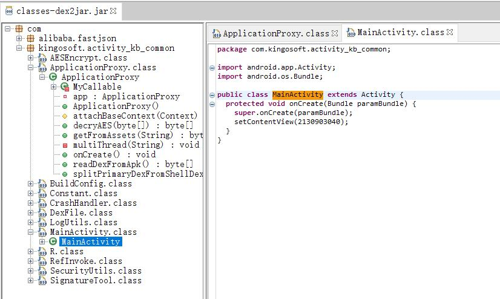
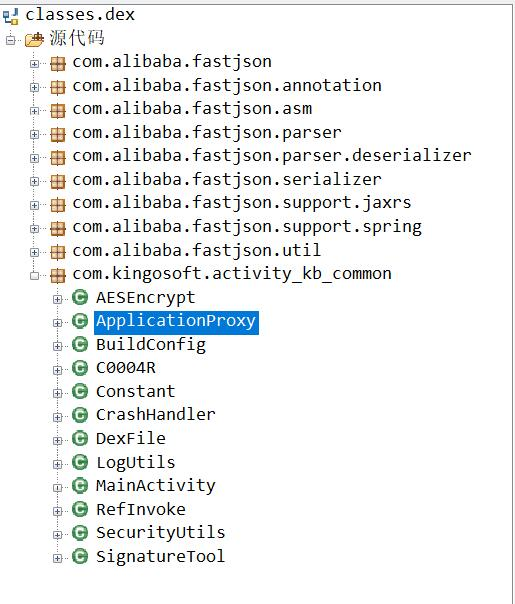
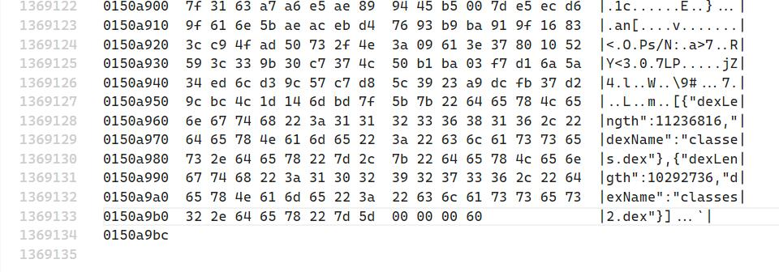
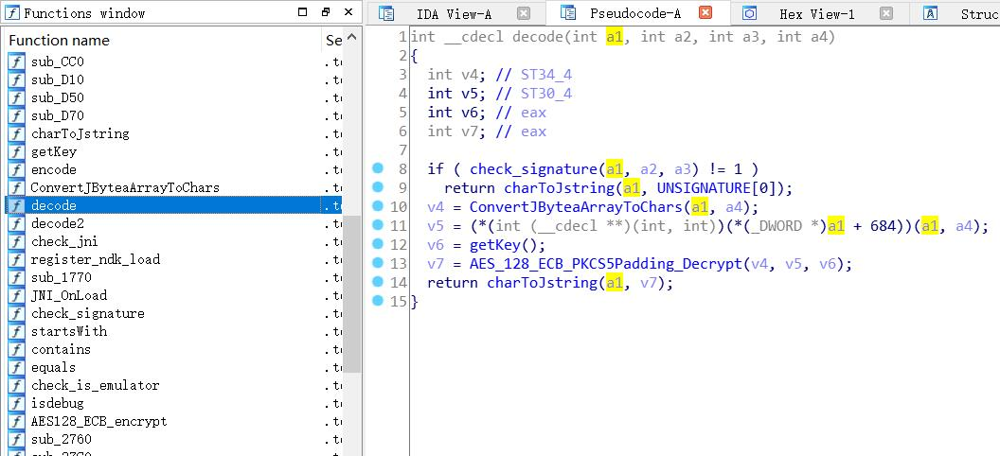
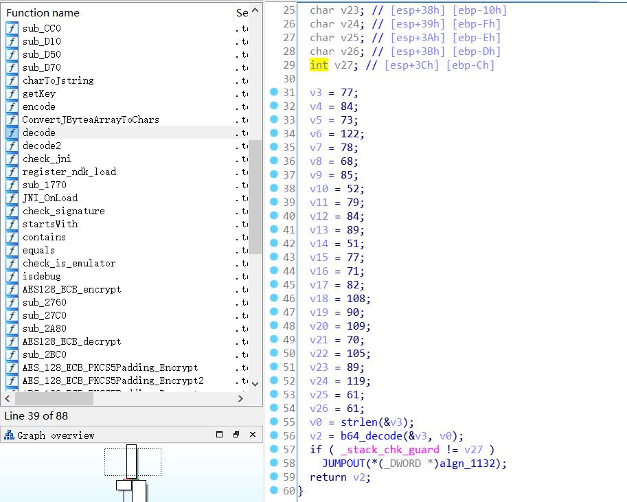
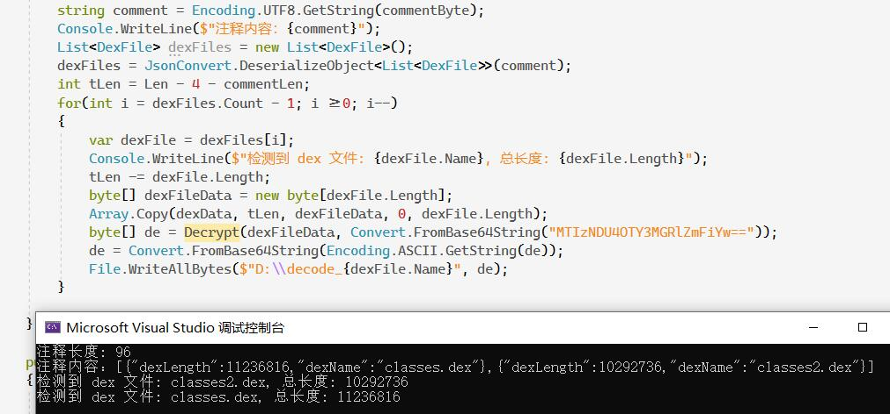
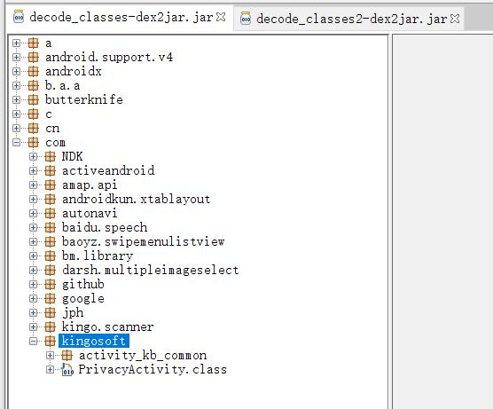
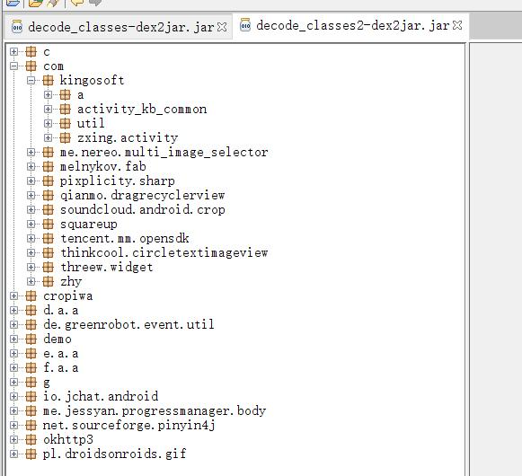

<!DOCTYPE html>
<html>
<head><meta name="generator" content="Hexo 3.9.0">
  <!-- hexo-inject:begin --><!-- hexo-inject:end --><meta charset="utf-8">
  <meta http-equiv="X-UA-Compatible" content="IE=edge">
  
  <title>青果教务系统安卓APP(喜鹊儿)逆向分析 | uint128&#39;s Blog</title>
  <meta name="description" content="uint128&#39;s blog">
  <meta name="keywords" content="uint128,uint128&#39;s blog,uint128.com">
  <meta name="HandheldFriendly" content="True">
  <meta name="apple-mobile-web-app-capable" content="yes">
  <link rel="shortcut icon" href="/">
  <link rel="alternate" href="/atom.xml" title="uint128's Blog">
  <meta name="viewport" content="width=device-width, initial-scale=1, maximum-scale=1">
  <meta name="description" content="本文仅供学习交流，请勿用于违法用途。">
<meta name="keywords" content="uint128,uint128&#39;s blog,uint128.com">
<meta property="og:type" content="article">
<meta property="og:title" content="青果教务系统安卓APP(喜鹊儿)逆向分析">
<meta property="og:url" content="https://uint128.com/2020/08/20/青果教务系统安卓APP-喜鹊儿-逆向分析/index.html">
<meta property="og:site_name" content="uint128&#39;s Blog">
<meta property="og:description" content="本文仅供学习交流，请勿用于违法用途。">
<meta property="og:locale" content="zh-cn">
<meta property="og:image" content="https://uint128.com/2020/08/20/青果教务系统安卓APP-喜鹊儿-逆向分析/pic1.jpg">
<meta property="og:image" content="https://uint128.com/2020/08/20/青果教务系统安卓APP-喜鹊儿-逆向分析/pic2.jpg">
<meta property="og:image" content="https://uint128.com/2020/08/20/青果教务系统安卓APP-喜鹊儿-逆向分析/pic3.jpg">
<meta property="og:image" content="https://uint128.com/2020/08/20/青果教务系统安卓APP-喜鹊儿-逆向分析/pic4.jpg">
<meta property="og:image" content="https://uint128.com/2020/08/20/青果教务系统安卓APP-喜鹊儿-逆向分析/pic5.jpg">
<meta property="og:image" content="https://uint128.com/2020/08/20/青果教务系统安卓APP-喜鹊儿-逆向分析/pic6.jpg">
<meta property="og:image" content="https://uint128.com/2020/08/20/青果教务系统安卓APP-喜鹊儿-逆向分析/pic7.jpg">
<meta property="og:image" content="https://uint128.com/2020/08/20/青果教务系统安卓APP-喜鹊儿-逆向分析/pic8.jpg">
<meta property="og:image" content="https://uint128.com/2020/08/20/青果教务系统安卓APP-喜鹊儿-逆向分析/pic9.jpg">
<meta property="og:updated_time" content="2020-08-20T15:46:36.936Z">
<meta name="twitter:card" content="summary">
<meta name="twitter:title" content="青果教务系统安卓APP(喜鹊儿)逆向分析">
<meta name="twitter:description" content="本文仅供学习交流，请勿用于违法用途。">
<meta name="twitter:image" content="https://uint128.com/2020/08/20/青果教务系统安卓APP-喜鹊儿-逆向分析/pic1.jpg">
    
  <link href="https://fonts.googleapis.com/css?family=Inconsolata|Titillium+Web" rel="stylesheet">
  <link href="https://fonts.googleapis.com/css?family=Roboto+Mono" rel="stylesheet">
  <link href="//cdnjs.cloudflare.com/ajax/libs/node-waves/0.7.5/waves.min.css" rel="stylesheet">
  <link rel="stylesheet" href="/style.css">
  <script>
    function setLoadingBarProgress(num) {
      document.getElementById('loading-bar').style.width=num+"%";
    }
  </script>
  <script src="/js/md5.js"></script>
<link rel="alternate" href="/atom.xml" title="uint128's Blog" type="application/atom+xml"><!-- hexo-inject:begin --><!-- hexo-inject:end -->
</head>
</html>
<body>
  <!-- hexo-inject:begin --><!-- hexo-inject:end --><div id="loading-bar-wrapper">
  <div id="loading-bar"></div>
</div>


  <script>setLoadingBarProgress(20)</script> 
  <header class="l_header">
	<div class='wrapper'>
		<div class="nav-main container container--flex">
			<a class="logo flat-box" href='/' >
				uint128's Blog
			</a>
			<div class='menu'>
				<ul class='h-list'>
					
						<li>
							<a class='flat-box nav-home' href='/'>
								Home
							</a>
						</li>
					
						<li>
							<a class='flat-box nav-archives' href='/archives'>
								Archives
							</a>
						</li>
					
						<li>
							<a class='flat-box nav-about' href='/about'>
								About
							</a>
						</li>
					
				</ul>
				<div class='underline'></div>
			</div>
			
				<div class="m_search">
					<form name="searchform" class="form u-search-form">
						<input type="text" class="input u-search-input" placeholder="Search" />
						<span class="icon icon-search"></span>
					</form>
				</div>
			
			<ul class='switcher h-list'>
				
					<li class='s-search'><a href='javascript:void(0)'><span class="icon icon-search flat-box"></span></a></li>
				
				<li class='s-menu'><a href='javascript:void(0)'><span class="icon icon-menu flat-box"></span></a></li>
			</ul>
		</div>
		
		<div class='nav-sub container container--flex'>
			<a class="logo" class="flat-box" href='javascript:void(0)'>
				Word of Forks
			</a>

			<ul class='switcher h-list'>
				<li class='s-comment'><a href='javascript:void(0)'><span class="icon icon-chat_bubble_outline flat-box"></span></a></li>
				<li class='s-top'><a href='javascript:void(0)'><span class="icon icon-arrow_upward flat-box"></span></a></li>
				<li class='s-toc'><a href='javascript:void(0)'><span class="icon icon-format_list_numbered flat-box"></span></a></li>
			</ul>
		</div>
	</div>
</header>
<aside class="menu-phone">
	<nav>
		
			<a href="/" class="nav-home nav">
				Home
			</a>
		
			<a href="/archives" class="nav-archives nav">
				Archives
			</a>
		
			<a href="/about" class="nav-about nav">
				About
			</a>
		
	</nav>
</aside>

    <script>setLoadingBarProgress(40);</script>
  <div class="l_body">
    <div class='container clearfix'>
      <div class='l_main'>
        <article id="post-青果教务系统安卓APP-喜鹊儿-逆向分析"
  class="post white-box article-type-post"
  itemscope itemprop="blogPost">
	<section class='meta'>
	<h2 class="title">
  	<a href="/2020/08/20/青果教务系统安卓APP-喜鹊儿-逆向分析/">
    	青果教务系统安卓APP(喜鹊儿)逆向分析
    </a>
  </h2>
	<time>
	  8月 20, 2020
	</time>
	
	</section>
	
		<section class="toc-wrapper"><ol class="toc"><li class="toc-item toc-level-2"><a class="toc-link" href="#基本分析"><span class="toc-number">1.</span> <span class="toc-text">基本分析</span></a></li><li class="toc-item toc-level-2"><a class="toc-link" href="#柳暗花明"><span class="toc-number">2.</span> <span class="toc-text">柳暗花明</span></a></li><li class="toc-item toc-level-2"><a class="toc-link" href="#逆向成功"><span class="toc-number">3.</span> <span class="toc-text">逆向成功</span></a></li></ol></section>
	
	<section class="article typo">
  	<div class="article-entry" itemprop="articleBody">
    	<p>本文仅供学习交流，请勿用于违法用途。<br><a id="more"></a></p>
<p>博主第一次尝试 APK 逆向，以下分析内容针对 <em>v2.6.109</em> 版本的APP。</p>
<h2 id="基本分析"><a href="#基本分析" class="headerlink" title="基本分析"></a>基本分析</h2><p>首先是基本操作，使用 apktool 解压得到 classes.dex，然后使用 dex2jar 将 classes.dex 转化为 jar 文件，再使用 jd-gui 打开 jar 文件，查看反编译出来的代码。反编译结果如下图所示。</p>
<p></p>
<p>看到代码的第一反应是惊讶与疑惑，这代码也太少太简单了吧！我以为是反编译的结果不对，又使用 jadx-gui 打开这个 dex 文件。结果如下图所示。</p>
<p></p>
<p>可以看出两个软件反编译的结果是一样的，也就是反编译的结果是没有问题的。使用文本搜索搜索了下一些文本，但是都找不到。很显然，这个 APP 真正的代码并没有被反编译出来。那么真正的代码都藏在了哪里呢？</p>
<p>查阅了一些有关 APK 加固的文章，一种识别 APK 被加固的方式是查看反编译出来的源代码的包名。比如有 tencent 字样，那么多半是腾讯的加固。这个 APP 反编译出来的源代码里确实有 alibaba 的字样，但是这个只是 fastjson 库的包名。结合网上的逆向资料来看，这也不像 alibaba 加固后的样子。</p>
<p>这个时候，我猜测这是一种自制的加固方式。浏览反编译出来的代码，里面的”AESEncrypt“、”ApplicationProxy“、”RefInvoke“ 和 ”SecurityUtils“ 让我更相信这个 APP 被加固了。</p>
<p>于是我开始仔细阅读里面的源代码，不久我就找到了一个很可能是突破口的函数。这是一个叫做 ”readDexFromApk“ 的函数，它的定义如下：</p>
<figure class="highlight java"><table><tr><td class="gutter"><pre><span class="line">1</span><br><span class="line">2</span><br><span class="line">3</span><br><span class="line">4</span><br><span class="line">5</span><br><span class="line">6</span><br><span class="line">7</span><br><span class="line">8</span><br><span class="line">9</span><br><span class="line">10</span><br><span class="line">11</span><br><span class="line">12</span><br><span class="line">13</span><br><span class="line">14</span><br><span class="line">15</span><br><span class="line">16</span><br><span class="line">17</span><br><span class="line">18</span><br><span class="line">19</span><br><span class="line">20</span><br><span class="line">21</span><br><span class="line">22</span><br></pre></td><td class="code"><pre><span class="line"><span class="keyword">public</span> <span class="keyword">byte</span>[] readDexFromApk() <span class="keyword">throws</span> IOException &#123;</span><br><span class="line">    ByteArrayOutputStream dexByteArrayOutputSteam = <span class="keyword">new</span> ByteArrayOutputStream();</span><br><span class="line">    System.out.println(getApplicationInfo().sourceDir);</span><br><span class="line">    ZipInputStream localZipInputStream = <span class="keyword">new</span> ZipInputStream(<span class="keyword">new</span> BufferedInputStream(<span class="keyword">new</span> FileInputStream(getApplicationInfo().sourceDir)));</span><br><span class="line">    <span class="keyword">while</span> (<span class="keyword">true</span>) &#123;</span><br><span class="line">        ZipEntry localZipEntry = localZipInputStream.getNextEntry();</span><br><span class="line">        <span class="keyword">if</span> (localZipEntry == <span class="keyword">null</span>) &#123;</span><br><span class="line">            localZipInputStream.close();</span><br><span class="line">            localZipInputStream.close();</span><br><span class="line">            <span class="keyword">return</span> dexByteArrayOutputSteam.toByteArray();</span><br><span class="line">        &#125; <span class="keyword">else</span> <span class="keyword">if</span> (localZipEntry.getName().equals(<span class="string">"classes.dex"</span>)) &#123;</span><br><span class="line">            <span class="keyword">byte</span>[] arrayOfByte = <span class="keyword">new</span> <span class="keyword">byte</span>[<span class="number">1024</span>];</span><br><span class="line">            <span class="keyword">while</span> (<span class="keyword">true</span>) &#123;</span><br><span class="line">                <span class="keyword">int</span> i = localZipInputStream.read(arrayOfByte);</span><br><span class="line">                <span class="keyword">if</span> (i == -<span class="number">1</span>) &#123;</span><br><span class="line">                    <span class="keyword">break</span>;</span><br><span class="line">                &#125;</span><br><span class="line">                dexByteArrayOutputSteam.write(arrayOfByte, <span class="number">0</span>, i);</span><br><span class="line">            &#125;</span><br><span class="line">        &#125;</span><br><span class="line">    &#125;</span><br><span class="line">&#125;</span><br></pre></td></tr></table></figure>
<p>这段代码没有被混淆过，可读性很好。这段代码的大意是解压自己这个 apk 文件，逐个分析 apk 里面的文件，如果有名为 classes.dex 的文件，那么就读取这个 dex 文件的所有内容，最后返回读取到的内容。</p>
<p>这个函数被一个叫 multiThread 的函数调用。它的代码如下：</p>
<blockquote>
<p>这个函数很长，建议读者先往下读我对它的拆解分析，然后再回头阅读这个函数的代码。</p>
</blockquote>
<figure class="highlight java"><table><tr><td class="gutter"><pre><span class="line">1</span><br><span class="line">2</span><br><span class="line">3</span><br><span class="line">4</span><br><span class="line">5</span><br><span class="line">6</span><br><span class="line">7</span><br><span class="line">8</span><br><span class="line">9</span><br><span class="line">10</span><br><span class="line">11</span><br><span class="line">12</span><br><span class="line">13</span><br><span class="line">14</span><br><span class="line">15</span><br><span class="line">16</span><br><span class="line">17</span><br><span class="line">18</span><br><span class="line">19</span><br><span class="line">20</span><br><span class="line">21</span><br><span class="line">22</span><br><span class="line">23</span><br><span class="line">24</span><br><span class="line">25</span><br><span class="line">26</span><br><span class="line">27</span><br><span class="line">28</span><br><span class="line">29</span><br><span class="line">30</span><br><span class="line">31</span><br><span class="line">32</span><br><span class="line">33</span><br><span class="line">34</span><br><span class="line">35</span><br><span class="line">36</span><br><span class="line">37</span><br><span class="line">38</span><br><span class="line">39</span><br><span class="line">40</span><br><span class="line">41</span><br><span class="line">42</span><br><span class="line">43</span><br><span class="line">44</span><br><span class="line">45</span><br><span class="line">46</span><br><span class="line">47</span><br><span class="line">48</span><br><span class="line">49</span><br><span class="line">50</span><br><span class="line">51</span><br><span class="line">52</span><br><span class="line">53</span><br><span class="line">54</span><br></pre></td><td class="code"><pre><span class="line"><span class="function"><span class="keyword">private</span> <span class="keyword">void</span> <span class="title">multiThread</span><span class="params">(String primaryDexDir)</span> </span>&#123;</span><br><span class="line">    <span class="keyword">try</span> &#123;</span><br><span class="line">        <span class="keyword">byte</span>[] data = readDexFromApk();</span><br><span class="line">        <span class="keyword">int</span> shellDexLen = data.length;</span><br><span class="line">        <span class="keyword">byte</span>[] dexFileCommentLenByte = <span class="keyword">new</span> <span class="keyword">byte</span>[<span class="number">4</span>];</span><br><span class="line">        System.arraycopy(data, shellDexLen - <span class="number">4</span>, dexFileCommentLenByte, <span class="number">0</span>, <span class="number">4</span>);</span><br><span class="line">        <span class="keyword">int</span> dexFileCommentLen = <span class="keyword">new</span> DataInputStream(<span class="keyword">new</span> ByteArrayInputStream(dexFileCommentLenByte)).readInt();</span><br><span class="line">        <span class="keyword">byte</span>[] dexFileCommentByte = <span class="keyword">new</span> <span class="keyword">byte</span>[dexFileCommentLen];</span><br><span class="line">        System.arraycopy(data, (shellDexLen - <span class="number">4</span>) - dexFileCommentLen, dexFileCommentByte, <span class="number">0</span>, dexFileCommentLen);</span><br><span class="line">        String dexFileComment = <span class="keyword">new</span> String(dexFileCommentByte);</span><br><span class="line">        LogUtils.m3d(<span class="string">"dex comment:"</span> + dexFileComment);</span><br><span class="line">        ArrayList&lt;DexFile&gt; dexFileArrayList = (ArrayList) JSON.parseArray(dexFileComment, DexFile.class);</span><br><span class="line">        <span class="keyword">int</span> currentReadEndIndex = (shellDexLen - <span class="number">4</span>) - dexFileCommentLen;</span><br><span class="line">        ExecutorService pool = Executors.newFixedThreadPool(dexFileArrayList.size());</span><br><span class="line">        ArrayList arrayList = <span class="keyword">new</span> ArrayList();</span><br><span class="line">        List&lt;String&gt; dexnamelist = <span class="keyword">new</span> ArrayList&lt;&gt;();</span><br><span class="line">        <span class="keyword">for</span> (<span class="keyword">int</span> i = dexFileArrayList.size() - <span class="number">1</span>; i &gt;= <span class="number">0</span>; i--) &#123;</span><br><span class="line">            DexFile dexFile = dexFileArrayList.get(i);</span><br><span class="line">            <span class="keyword">byte</span>[] primaryDexData = <span class="keyword">new</span> <span class="keyword">byte</span>[dexFile.getDexLength()];</span><br><span class="line">            System.arraycopy(data, currentReadEndIndex - dexFile.getDexLength(), primaryDexData, <span class="number">0</span>, dexFile.getDexLength());</span><br><span class="line">            arrayList.add(pool.submit(<span class="keyword">new</span> MyCallable(i, primaryDexData, <span class="keyword">this</span>)));</span><br><span class="line">            dexnamelist.add(dexFile.getDexName());</span><br><span class="line">            currentReadEndIndex -= dexFile.getDexLength();</span><br><span class="line">        &#125;</span><br><span class="line">        <span class="keyword">int</span> i2 = arrayList.size() - <span class="number">1</span>;</span><br><span class="line">        <span class="keyword">while</span> (i2 &gt;= <span class="number">0</span>) &#123;</span><br><span class="line">            <span class="keyword">try</span> &#123;</span><br><span class="line">                <span class="keyword">byte</span>[] primaryDexData2 = (<span class="keyword">byte</span>[]) ((Future) arrayList.get(i2)).get(<span class="number">60</span>, TimeUnit.SECONDS);</span><br><span class="line">                System.out.println(<span class="string">" primaryDexData encCD size="</span> + primaryDexData2.length);</span><br><span class="line">                File file = <span class="keyword">new</span> File(primaryDexDir, dexnamelist.get(i2));</span><br><span class="line">                <span class="keyword">if</span> (!file.exists()) &#123;</span><br><span class="line">                    file.createNewFile();</span><br><span class="line">                &#125;</span><br><span class="line">                FileOutputStream fileOutputStream = <span class="keyword">new</span> FileOutputStream(file);</span><br><span class="line">                fileOutputStream.write(primaryDexData2);</span><br><span class="line">                fileOutputStream.close();</span><br><span class="line">                i2--;</span><br><span class="line">            &#125; <span class="keyword">catch</span> (InterruptedException e) &#123;</span><br><span class="line">                e.printStackTrace();</span><br><span class="line">                File odex = getDir(<span class="string">"payload_odex"</span>, <span class="number">0</span>);</span><br><span class="line">                getDir(<span class="string">"payload_dex"</span>, <span class="number">0</span>).delete();</span><br><span class="line">                odex.delete();</span><br><span class="line">                <span class="keyword">return</span>;</span><br><span class="line">            &#125; <span class="keyword">catch</span> (ExecutionException e2) &#123;</span><br><span class="line">                e2.printStackTrace();</span><br><span class="line">                File odex2 = getDir(<span class="string">"payload_odex"</span>, <span class="number">0</span>);</span><br><span class="line">                getDir(<span class="string">"payload_dex"</span>, <span class="number">0</span>).delete();</span><br><span class="line">                odex2.delete();</span><br><span class="line">                <span class="keyword">return</span>;</span><br><span class="line">            &#125;</span><br><span class="line">        &#125;</span><br><span class="line">    &#125; <span class="keyword">catch</span> (Exception e3) &#123;</span><br><span class="line">    &#125;</span><br><span class="line">&#125;</span><br></pre></td></tr></table></figure>
<p>这段代码首先调用 readDexFromApk 读取 APP 自己的 Dex 文件，把数据存入变量 data 中。然后读取了 Dex 文件最末尾的 4 个字节，以 int 类型解读这 4 个字节，存入到变量 dexFileCommentLen 中。</p>
<figure class="highlight java"><table><tr><td class="gutter"><pre><span class="line">1</span><br><span class="line">2</span><br><span class="line">3</span><br><span class="line">4</span><br><span class="line">5</span><br><span class="line">6</span><br><span class="line">7</span><br><span class="line">8</span><br><span class="line">9</span><br></pre></td><td class="code"><pre><span class="line"><span class="comment">// 读取 Dex 文件</span></span><br><span class="line"><span class="keyword">byte</span>[] data = readDexFromApk();</span><br><span class="line"><span class="comment">// Dex 文件的总长</span></span><br><span class="line"><span class="keyword">int</span> shellDexLen = data.length;</span><br><span class="line"><span class="keyword">byte</span>[] dexFileCommentLenByte = <span class="keyword">new</span> <span class="keyword">byte</span>[<span class="number">4</span>];</span><br><span class="line"><span class="comment">// 读取 Dex 文件最末尾的 4 个字节</span></span><br><span class="line">System.arraycopy(data, shellDexLen - <span class="number">4</span>, dexFileCommentLenByte0, <span class="number">4</span>);</span><br><span class="line"><span class="comment">// 以 int 类型解读这 4 个字节</span></span><br><span class="line"><span class="keyword">int</span> dexFileCommentLen = <span class="keyword">new</span> DataInputStream(<span class="keyword">new</span> ByteArrayInputStream(dexFileCommentLenByte)).readInt();</span><br></pre></td></tr></table></figure>
<p>结合变量名不难猜测，这个 int 变量描述的是一个 ”comment“ 的长度，而且是 ”dex file comment“。很显然，这个 App 的 dex 文件里另有乾坤，接下来多半是读取这个 ”dex file comment“，并且进行分析。</p>
<p>紧接着上面的这几行代码的大概含义是：从刚刚读取 4 个字节的位置继续<strong>向前</strong>读取 dexFileCommentLen 那么多个字节，并把这些字节数据以文本的形式解读，存入到  String 型变量 dexFileComment 中。最后用 JSON 库解析读取到的内容。</p>
<figure class="highlight java"><table><tr><td class="gutter"><pre><span class="line">1</span><br><span class="line">2</span><br><span class="line">3</span><br><span class="line">4</span><br><span class="line">5</span><br><span class="line">6</span><br><span class="line">7</span><br><span class="line">8</span><br><span class="line">9</span><br></pre></td><td class="code"><pre><span class="line"><span class="keyword">byte</span>[] dexFileCommentByte = <span class="keyword">new</span> <span class="keyword">byte</span>[dexFileCommentLen];</span><br><span class="line"><span class="comment">// 往前继续读取 dexFileCommentLen 个字节的内容</span></span><br><span class="line">System.arraycopy(data, (shellDexLen - <span class="number">4</span>) - dexFileCommentLen , dexFileCommentByte, <span class="number">0</span>, dexFileCommentLen);</span><br><span class="line"><span class="comment">// 以文本的形式解读读取到的内容，存入到 string 变量中</span></span><br><span class="line">String dexFileComment = <span class="keyword">new</span> String(dexFileCommentByte);</span><br><span class="line"><span class="comment">// 从类名猜测，这一句是在记录日志</span></span><br><span class="line">LogUtils.m3d(<span class="string">"dex comment:"</span> + dexFileComment);</span><br><span class="line"><span class="comment">// 用 JSON 库解析这段文本</span></span><br><span class="line">ArrayList&lt;DexFile&gt; dexFileArrayList = (ArrayList) JSOparseArray(dexFileComment, DexFile.class);</span><br></pre></td></tr></table></figure>
<p>读完上面的代码，看来我的思路是对的。这个 dexFileComment 不仅是文本，而且还是 JSON 格式的文本。接下来我已经迫不及待想要验证这段代码的真实性。</p>
<p>一开始我使用的是 VSCode + hexdump 插件来阅读 dex 文件，但是这个 dex 文件实在是太大了，受限于插件，根本读不到末尾的内容。于是我又使用 linux 里的 hexdump 工具查看。</p>
<p>在 wsl 中执行：</p>
<figure class="highlight bash"><table><tr><td class="gutter"><pre><span class="line">1</span><br></pre></td><td class="code"><pre><span class="line">hexdump -C classes.dex &gt; hexdump.txt</span><br></pre></td></tr></table></figure>
<p>最终得到的 hexdump.txt 足足有 100MB 那么大！我直接翻到末尾，内容如下：</p>
<p></p>
<p>可以看到，这个 App 的 dex 文件的末尾确实有一段 JSON 文本。最后四个字节的内容对应十进制 96，和 JSON 文本的长度一致。这说明上面的代码是真实有效的，确实是这次逆向的突破口。</p>
<p>顺着这个思路继续来解读这段 JSON 文本。根据这段 JSON 文本，可以了解到在哪个地方藏着两个 dex 文件，名字分别是 classes.dex 和 classes2.dex，同时给出了这两个文件的长度。</p>
<p>回到上面提到的 multiThread 这个函数的代码。JSON 库解析这段 JSON 文本后，得到了一个 DexFile 对象的数组。其中 DexFile 类的定义如下：</p>
<figure class="highlight java"><table><tr><td class="gutter"><pre><span class="line">1</span><br><span class="line">2</span><br><span class="line">3</span><br><span class="line">4</span><br><span class="line">5</span><br></pre></td><td class="code"><pre><span class="line"><span class="keyword">public</span> <span class="class"><span class="keyword">class</span> <span class="title">DexFile</span> </span>&#123;</span><br><span class="line">    <span class="keyword">private</span> <span class="keyword">int</span> dexLength;</span><br><span class="line">    <span class="keyword">private</span> String dexName;</span><br><span class="line">    <span class="comment">/* 省略了不重要的代码 */</span></span><br><span class="line">&#125;</span><br></pre></td></tr></table></figure>
<p>DexFile 类中的两个字段和看到的 JSON 文本里包含的字段是一致的。</p>
<p>multiThread 函数接下来会从读取完 dexFileComment 的位置继续往前读取内容，读取的长度来自于 DexFile 的 dexLength 字段：</p>
<figure class="highlight java"><table><tr><td class="gutter"><pre><span class="line">1</span><br><span class="line">2</span><br><span class="line">3</span><br><span class="line">4</span><br><span class="line">5</span><br><span class="line">6</span><br><span class="line">7</span><br><span class="line">8</span><br></pre></td><td class="code"><pre><span class="line"><span class="keyword">for</span> (<span class="keyword">int</span> i = dexFileArrayList.size() - <span class="number">1</span>; i &gt;= <span class="number">0</span>; i--) &#123;</span><br><span class="line">    DexFile dexFile = dexFileArrayList.get(i);</span><br><span class="line">    <span class="keyword">byte</span>[] primaryDexData = <span class="keyword">new</span> <span class="keyword">byte</span>[dexFile.getDexLength()];</span><br><span class="line">    System.arraycopy(data, currentReadEndIndex - dexFile.getDexLength(), primaryDexData, <span class="number">0</span>, dexFile.getDexLength());</span><br><span class="line">    arrayList.add(pool.submit(<span class="keyword">new</span> MyCallable(i, primaryDexData, <span class="keyword">this</span>)));</span><br><span class="line">    dexnamelist.add(dexFile.getDexName());</span><br><span class="line">    currentReadEndIndex -= dexFile.getDexLength();</span><br><span class="line">&#125;</span><br></pre></td></tr></table></figure>
<p>看来那两个藏起来的 dex 文件就藏在这个 App 的 dex 文件末尾。这两个隐藏起来的 dex 文件的数据，扔到了线程池里进行处理。这里的线程池很显然对应了这个函数名称 multiThread。原来这个函数的 “多线程” 指的是多线程处理被隐藏的 dex 文件数据。</p>
<p>我没有学习过 java 语言，但是我猜测任务交给线程池之后应该会执行 MyCallable 这个类的 call 方法。</p>
<figure class="highlight java"><table><tr><td class="gutter"><pre><span class="line">1</span><br><span class="line">2</span><br><span class="line">3</span><br><span class="line">4</span><br><span class="line">5</span><br><span class="line">6</span><br><span class="line">7</span><br><span class="line">8</span><br><span class="line">9</span><br></pre></td><td class="code"><pre><span class="line"><span class="keyword">private</span> <span class="class"><span class="keyword">class</span> <span class="title">MyCallable</span> <span class="keyword">implements</span> <span class="title">Callable</span> </span>&#123;</span><br><span class="line">    <span class="comment">/* 省略了不重要的代码 */</span></span><br><span class="line">    <span class="function"><span class="keyword">public</span> Object <span class="title">call</span><span class="params">()</span> <span class="keyword">throws</span> Exception </span>&#123;</span><br><span class="line">        <span class="keyword">long</span> startTime = System.nanoTime();</span><br><span class="line">        <span class="keyword">byte</span>[] primaryDexData = Base64.decode(<span class="keyword">new</span> String(SecurityUtils.AESDecrypt(AESEncrypt.decode(<span class="keyword">this</span>.innerapp, Base64.decode(Constant.AES_PRIVATE_KEY, <span class="number">2</span>), Constant.AES_IV, Constant.AES_TYPE, <span class="keyword">this</span>.innerDexData), <span class="string">"UTF-8"</span>), <span class="number">2</span>);</span><br><span class="line">        System.out.println(<span class="string">"程序运行时间： "</span> + <span class="keyword">this</span>.num + <span class="string">"--"</span> + (System.nanoTime() - startTime) + <span class="string">"ns"</span>);</span><br><span class="line">        <span class="keyword">return</span> primaryDexData;</span><br><span class="line">    &#125;</span><br><span class="line">&#125;</span><br></pre></td></tr></table></figure>
<p>我这么猜测不是毫无道理的，因为我认为被隐藏起来的 dex 很可能不会明文保存，不然开头看到的 AESEncrypt 类是干嘛用的？</p>
<p>这个 call 函数里正好用到了 AESEncrypt 类和 SecurityUtils 类。可以看出，这段代码确实是对刚刚读取的隐藏 dex 文件的数据进行解密。</p>
<p>上面这段代码中涉及的 Constan 类的内容如下：</p>
<figure class="highlight java"><table><tr><td class="gutter"><pre><span class="line">1</span><br><span class="line">2</span><br><span class="line">3</span><br><span class="line">4</span><br><span class="line">5</span><br></pre></td><td class="code"><pre><span class="line"><span class="keyword">public</span> <span class="class"><span class="keyword">class</span> <span class="title">Constant</span> </span>&#123;</span><br><span class="line">    <span class="keyword">public</span> <span class="keyword">static</span> <span class="keyword">final</span> String AES_IV = <span class="string">"1234567898765432"</span>;</span><br><span class="line">    <span class="keyword">public</span> <span class="keyword">static</span> <span class="keyword">final</span> String AES_PRIVATE_KEY = <span class="string">"m/EEDbJozOx74V16O9VNgmcjCrhDfT/sMdENbl/MOiY="</span>;</span><br><span class="line">    <span class="keyword">public</span> <span class="keyword">static</span> <span class="keyword">final</span> String AES_TYPE = <span class="string">"AES/ECB/PKCS5Padding"</span>;</span><br><span class="line">&#125;</span><br></pre></td></tr></table></figure>
<p>我猜测这里的内容指的是加密类型和密钥一类的参数。进一步可以猜测，被隐藏的 dex 文件是被 AES 算法加密的。</p>
<p>但是让我很疑惑的是，这段代码用到了两个 AES 解密的函数：“SecurityUtils.AESDecrypt” 和 “AESEncrypt.decode”，他们的定义如下：</p>
<figure class="highlight java"><table><tr><td class="gutter"><pre><span class="line">1</span><br><span class="line">2</span><br><span class="line">3</span><br><span class="line">4</span><br><span class="line">5</span><br><span class="line">6</span><br><span class="line">7</span><br></pre></td><td class="code"><pre><span class="line"><span class="keyword">public</span> <span class="keyword">static</span> <span class="keyword">byte</span>[] AESDecrypt(String privateKey, String iv, String AES_TYPE, <span class="keyword">byte</span>[] data) &#123;</span><br><span class="line">    <span class="keyword">new</span> IvParameterSpec(iv.getBytes());</span><br><span class="line">    SecretKeySpec key = <span class="keyword">new</span> SecretKeySpec(privateKey.getBytes(), <span class="string">"AES"</span>);</span><br><span class="line">    Cipher cipher = Cipher.getInstance(AES_TYPE);</span><br><span class="line">    cipher.init(<span class="number">2</span>, key);</span><br><span class="line">    <span class="keyword">return</span> cipher.doFinal(data);</span><br><span class="line">&#125;</span><br></pre></td></tr></table></figure>
<figure class="highlight java"><table><tr><td class="gutter"><pre><span class="line">1</span><br><span class="line">2</span><br><span class="line">3</span><br><span class="line">4</span><br><span class="line">5</span><br><span class="line">6</span><br><span class="line">7</span><br><span class="line">8</span><br><span class="line">9</span><br><span class="line">10</span><br><span class="line">11</span><br></pre></td><td class="code"><pre><span class="line"><span class="keyword">public</span> <span class="class"><span class="keyword">class</span> <span class="title">AESEncrypt</span> </span>&#123;</span><br><span class="line">    <span class="function"><span class="keyword">public</span> <span class="keyword">static</span> <span class="keyword">native</span> <span class="keyword">int</span> <span class="title">checkSignature</span><span class="params">(Object obj)</span></span>;</span><br><span class="line"></span><br><span class="line">    <span class="function"><span class="keyword">public</span> <span class="keyword">static</span> <span class="keyword">native</span> String <span class="title">decode</span><span class="params">(Object obj, <span class="keyword">byte</span>[] bArr)</span></span>;</span><br><span class="line"></span><br><span class="line">    <span class="function"><span class="keyword">public</span> <span class="keyword">static</span> <span class="keyword">native</span> String <span class="title">encode</span><span class="params">(Object obj, String str)</span></span>;</span><br><span class="line"></span><br><span class="line">    <span class="keyword">static</span> &#123;</span><br><span class="line">        System.loadLibrary(<span class="string">"JNIEncrypt"</span>);</span><br><span class="line">    &#125;</span><br><span class="line">&#125;</span><br></pre></td></tr></table></figure>
<p>暂且不管这两个函数的代码是什么意思。（实际上我并不了解 AES 算法，也读不懂这两个函数的代码）从这两个函数签名就可以分析到的是 SecurityUtils.AESDecrypt 需要的参数比 AESEncrypt.decode 的参数多了两个。</p>
<p>查阅资料了解到 AES 算法加解密是需要初始向量（即iv）和填充类型（PKCS5Padding）等参数的。</p>
<p>我实在无法理解为什么会有两个 AES 加解密的函数，我想程序员应该是非常懒而且非常讨厌重复的，在同一个程序里使用两个 AES 加解密类，实在不符合常理。</p>
<p>根据我的坏运气体质，写程序验证多半会解密失败。到时候要定位错误，同时涉及到两个 AES 解密，调试成本会很高。</p>
<p>因此我没有去验证这一段代码是不是真正的解密代码。</p>
<h2 id="柳暗花明"><a href="#柳暗花明" class="headerlink" title="柳暗花明"></a>柳暗花明</h2><p>我继续阅读其他的代码，重点挑选和 AES 有关的函数，很快发现了新的突破口：</p>
<figure class="highlight java"><table><tr><td class="gutter"><pre><span class="line">1</span><br><span class="line">2</span><br><span class="line">3</span><br><span class="line">4</span><br><span class="line">5</span><br><span class="line">6</span><br><span class="line">7</span><br><span class="line">8</span><br><span class="line">9</span><br><span class="line">10</span><br></pre></td><td class="code"><pre><span class="line"><span class="keyword">public</span> <span class="keyword">byte</span>[] decryAES(<span class="keyword">byte</span>[] data) &#123;</span><br><span class="line">    <span class="keyword">byte</span>[] baseDEC = <span class="keyword">null</span>;</span><br><span class="line">    <span class="keyword">try</span> &#123;</span><br><span class="line">        baseDEC = Base64.decode(AESEncrypt.decode(<span class="keyword">this</span>, data), <span class="number">2</span>);</span><br><span class="line">        System.out.println(<span class="string">" encCD size="</span> + baseDEC.length);</span><br><span class="line">        <span class="keyword">return</span> baseDEC;</span><br><span class="line">    &#125; <span class="keyword">catch</span> (Exception e) &#123;</span><br><span class="line">        <span class="keyword">return</span> baseDEC;</span><br><span class="line">    &#125;</span><br><span class="line">&#125;</span><br></pre></td></tr></table></figure>
<p>这个函数只调用了 AESEncrypt.decode 进行解密，要写程序验证，即使解密出现失败，我也有信心调试出错误原因。于是我查了下这个函数的引用，它被 splitPrimaryDexFromShellDex 函数所调用：</p>
<figure class="highlight java"><table><tr><td class="gutter"><pre><span class="line">1</span><br><span class="line">2</span><br><span class="line">3</span><br><span class="line">4</span><br><span class="line">5</span><br><span class="line">6</span><br><span class="line">7</span><br><span class="line">8</span><br><span class="line">9</span><br><span class="line">10</span><br><span class="line">11</span><br><span class="line">12</span><br><span class="line">13</span><br><span class="line">14</span><br><span class="line">15</span><br><span class="line">16</span><br><span class="line">17</span><br><span class="line">18</span><br><span class="line">19</span><br><span class="line">20</span><br><span class="line">21</span><br><span class="line">22</span><br><span class="line">23</span><br><span class="line">24</span><br><span class="line">25</span><br><span class="line">26</span><br></pre></td><td class="code"><pre><span class="line"><span class="function"><span class="keyword">public</span> <span class="keyword">void</span> <span class="title">splitPrimaryDexFromShellDex</span><span class="params">(<span class="keyword">byte</span>[] data, String primaryDexDir)</span> </span>&#123;</span><br><span class="line">    <span class="keyword">int</span> shellDexLen = data.length;</span><br><span class="line">    <span class="keyword">byte</span>[] dexFileCommentLenByte = <span class="keyword">new</span> <span class="keyword">byte</span>[<span class="number">4</span>];</span><br><span class="line">    System.arraycopy(data, shellDexLen - <span class="number">4</span>, dexFileCommentLenByte, <span class="number">0</span>, <span class="number">4</span>);</span><br><span class="line">    <span class="keyword">int</span> dexFileCommentLen = <span class="keyword">new</span> DataInputStream(<span class="keyword">new</span> ByteArrayInputStream(dexFileCommentLenByte)).readInt();</span><br><span class="line">    <span class="keyword">byte</span>[] dexFileCommentByte = <span class="keyword">new</span> <span class="keyword">byte</span>[dexFileCommentLen];</span><br><span class="line">    System.arraycopy(data, (shellDexLen - <span class="number">4</span>) - dexFileCommentLen, dexFileCommentByte, <span class="number">0</span>, dexFileCommentLen);</span><br><span class="line">    String dexFileComment = <span class="keyword">new</span> String(dexFileCommentByte);</span><br><span class="line">    LogUtils.m3d(<span class="string">"dex comment:"</span> + dexFileComment);</span><br><span class="line">    ArrayList&lt;DexFile&gt; dexFileArrayList = (ArrayList) JSON.parseArray(dexFileComment, DexFile.class);</span><br><span class="line">    <span class="keyword">int</span> currentReadEndIndex = (shellDexLen - <span class="number">4</span>) - dexFileCommentLen;</span><br><span class="line">    <span class="keyword">for</span> (<span class="keyword">int</span> i = dexFileArrayList.size() - <span class="number">1</span>; i &gt;= <span class="number">0</span>; i--) &#123;</span><br><span class="line">        DexFile dexFile = dexFileArrayList.get(i);</span><br><span class="line">        <span class="keyword">byte</span>[] primaryDexData = <span class="keyword">new</span> <span class="keyword">byte</span>[dexFile.getDexLength()];</span><br><span class="line">        System.arraycopy(data, currentReadEndIndex - dexFile.getDexLength(), primaryDexData, <span class="number">0</span>, dexFile.getDexLength());</span><br><span class="line">        <span class="keyword">byte</span>[] primaryDexData2 = decryAES(primaryDexData);</span><br><span class="line">        File file = <span class="keyword">new</span> File(primaryDexDir, dexFile.getDexName());</span><br><span class="line">        <span class="keyword">if</span> (!file.exists()) &#123;</span><br><span class="line">            file.createNewFile();</span><br><span class="line">        &#125;</span><br><span class="line">        FileOutputStream localFileOutputStream = <span class="keyword">new</span> FileOutputStream(file);</span><br><span class="line">        localFileOutputStream.write(primaryDexData2);</span><br><span class="line">        localFileOutputStream.close();</span><br><span class="line">        currentReadEndIndex -= dexFile.getDexLength();</span><br><span class="line">    &#125;</span><br><span class="line">&#125;</span><br></pre></td></tr></table></figure>
<p>这个函数执行的流程和 multiThread 函数大致相同，也是读取隐藏的 dex 文件数据，然后对各个隐藏 dex 文件数据<strong>调用decryAES</strong>函数进行解密，解密后的数据保存到磁盘中。</p>
<p>相比于刚刚 call 函数里的解密方式，更容易去验证这个函数的解密方式是否正确。</p>
<p>解密的核心函数是 AESEncrypt.decode，这个函数的内容不在 java 层而在 native 层。看这个函数的定义就知道，带着“native”关键词，并且来自“JNIEncrypt”库。</p>
<p>调试 native 库就要用到工具 IDA 了。使用 IDA 打开 x86 目录下的 libJNIEncrypt.so 文件，如下图所示，找到 decode 函数后按下 F5 反编译为 c 语言代码。</p>
<p></p>
<p>从代码中的 AES_128_ECB_PKCS5Padding_Decrypt 函数可以了解到很多很多信息。AES 解密所需要的信息这里基本上都包含了。但是我很疑惑为什么这里解密没有用到初始向量（iv）。要知道 java 层的 AES 解密以及 Constants 类都有初始向量 iv 的定义。</p>
<p>查阅资料后发现，原来 AES 算法在 ECB 模式下，初始向量不是必要的参数。</p>
<blockquote>
<p>但是 java 层的也是 ECB 模式！为什么它还是用到了初始向量呢？我没有去进一步了解，往后看吧，我直接成功了。（剧透警告）</p>
</blockquote>
<p>分析一下我只看懂的三行代码：</p>
<figure class="highlight c"><table><tr><td class="gutter"><pre><span class="line">1</span><br><span class="line">2</span><br><span class="line">3</span><br><span class="line">4</span><br><span class="line">5</span><br><span class="line">6</span><br></pre></td><td class="code"><pre><span class="line"><span class="comment">// v6 感觉是密钥</span></span><br><span class="line">v6 = getKey();</span><br><span class="line"><span class="comment">// 使用密钥进行解密</span></span><br><span class="line">v7 = AES_128_ECB_PKCS5Padding_Decrypt(v4, v5, v6);</span><br><span class="line"><span class="comment">// 返回解密后的数据</span></span><br><span class="line"><span class="keyword">return</span> charToJstring(a1, v7);</span><br></pre></td></tr></table></figure>
<p>于是我去看了看 getKey 函数，我想这里能够知道密钥是怎么来的：</p>
<p></p>
<p>这次我能看懂的代码只剩下 2 行了：</p>
<figure class="highlight c"><table><tr><td class="gutter"><pre><span class="line">1</span><br><span class="line">2</span><br><span class="line">3</span><br><span class="line">4</span><br></pre></td><td class="code"><pre><span class="line"><span class="comment">// 对 v3 执行 strlen ？v3 不是 char 变量吗？</span></span><br><span class="line">v0 = <span class="built_in">strlen</span>(&amp;v3);</span><br><span class="line"><span class="comment">// b64_decode 应该是 base64 解码</span></span><br><span class="line">v2 = b64_decode(&amp;v3, v0);</span><br></pre></td></tr></table></figure>
<p>从C语言的语法来理解，v3 应该是 char 变量，是不应该对它使用 strlen 的，但是这里偏偏就对它使用了strlen。</p>
<p>无奈我是第一次使用 IDA，所以我只能认为不能用常规的C语言语法来理解这段代码。我猜测 v3 到 v26 那些变量，实际上是同一个字符串的内容，它们在内存中的位置是连续的。</p>
<p>我又注意到 v25 和 v26 的字符一样，结合 base64 编码的特性，我猜测这两个字符很可能就是两个等号。翻了翻 ASCII 码表，dec 61对应的字符确实是等号，我的想法是对的。</p>
<p>最终，我得到了下面这些数据：</p>
<figure class="highlight c"><table><tr><td class="gutter"><pre><span class="line">1</span><br><span class="line">2</span><br><span class="line">3</span><br></pre></td><td class="code"><pre><span class="line"><span class="string">"77 84 73 122 78 68 85 52 79 84 89 51 77 71 82 108 90 109 70 105 89 119 61 61"</span></span><br><span class="line"><span class="string">"MTIzNDU4OTY3MGRlZmFiYw=="</span></span><br><span class="line"><span class="string">"1234589670defabc"</span></span><br></pre></td></tr></table></figure>
<p>虽然我是第一次进行 App 逆向，但是我见过别人的逆向文章，别人逆向出来的密钥，有很多都是 123456 这样的简单密钥。我也逆向出了个“1234589670defabc”，因此我逆向得到的也是密钥。（哈哈哈哈，别不信，我是对的）</p>
<p>接下来我用 C# 写了个程序，去验证我的猜想。</p>
<figure class="highlight c#"><table><tr><td class="gutter"><pre><span class="line">1</span><br><span class="line">2</span><br><span class="line">3</span><br><span class="line">4</span><br><span class="line">5</span><br><span class="line">6</span><br><span class="line">7</span><br><span class="line">8</span><br><span class="line">9</span><br><span class="line">10</span><br><span class="line">11</span><br><span class="line">12</span><br><span class="line">13</span><br><span class="line">14</span><br><span class="line">15</span><br><span class="line">16</span><br><span class="line">17</span><br><span class="line">18</span><br><span class="line">19</span><br><span class="line">20</span><br><span class="line">21</span><br><span class="line">22</span><br><span class="line">23</span><br><span class="line">24</span><br><span class="line">25</span><br><span class="line">26</span><br><span class="line">27</span><br><span class="line">28</span><br><span class="line">29</span><br><span class="line">30</span><br><span class="line">31</span><br><span class="line">32</span><br><span class="line">33</span><br><span class="line">34</span><br><span class="line">35</span><br><span class="line">36</span><br><span class="line">37</span><br><span class="line">38</span><br><span class="line">39</span><br><span class="line">40</span><br><span class="line">41</span><br><span class="line">42</span><br><span class="line">43</span><br><span class="line">44</span><br><span class="line">45</span><br><span class="line">46</span><br><span class="line">47</span><br><span class="line">48</span><br><span class="line">49</span><br><span class="line">50</span><br><span class="line">51</span><br><span class="line">52</span><br><span class="line">53</span><br><span class="line">54</span><br><span class="line">55</span><br><span class="line">56</span><br><span class="line">57</span><br><span class="line">58</span><br><span class="line">59</span><br><span class="line">60</span><br><span class="line">61</span><br><span class="line">62</span><br><span class="line">63</span><br><span class="line">64</span><br></pre></td><td class="code"><pre><span class="line"><span class="keyword">using</span> Newtonsoft.Json;</span><br><span class="line"><span class="keyword">using</span> Newtonsoft.Json.Linq;</span><br><span class="line"><span class="keyword">using</span> System;</span><br><span class="line"><span class="keyword">using</span> System.Collections.Generic;</span><br><span class="line"><span class="keyword">using</span> System.IO;</span><br><span class="line"><span class="keyword">using</span> System.Security.Cryptography;</span><br><span class="line"><span class="keyword">using</span> System.Text;</span><br><span class="line"></span><br><span class="line"><span class="keyword">namespace</span> <span class="title">kgo</span></span><br><span class="line">&#123;</span><br><span class="line">    <span class="keyword">class</span> <span class="title">Program</span></span><br><span class="line">    &#123;</span><br><span class="line">        <span class="function"><span class="keyword">static</span> <span class="keyword">void</span> <span class="title">Main</span>(<span class="params"><span class="keyword">string</span>[] args</span>)</span></span><br><span class="line"><span class="function"></span>        &#123;</span><br><span class="line">            <span class="keyword">byte</span>[] dexData = File.ReadAllBytes(<span class="string">"D:\\classes.dex"</span>);</span><br><span class="line">            <span class="keyword">int</span> Len = dexData.Length;</span><br><span class="line">            <span class="keyword">byte</span>[] commentLenByte = <span class="keyword">new</span> <span class="keyword">byte</span>[<span class="number">4</span>];</span><br><span class="line">            Array.Copy(dexData, Len - <span class="number">4</span>, commentLenByte, <span class="number">0</span>, <span class="number">4</span>);</span><br><span class="line">            Array.Reverse(commentLenByte);</span><br><span class="line">            <span class="keyword">int</span> commentLen = BitConverter.ToInt32(commentLenByte);</span><br><span class="line">            Console.WriteLine(<span class="string">$"注释长度: <span class="subst">&#123;commentLen&#125;</span>"</span>);</span><br><span class="line">            <span class="keyword">byte</span>[] commentByte = <span class="keyword">new</span> <span class="keyword">byte</span>[commentLen];</span><br><span class="line">            Array.Copy(dexData, Len - <span class="number">4</span> - commentLen, commentByte, <span class="number">0</span>, commentLen);</span><br><span class="line">            <span class="keyword">string</span> comment = Encoding.UTF8.GetString(commentByte);</span><br><span class="line">            Console.WriteLine(<span class="string">$"注释内容：<span class="subst">&#123;comment&#125;</span>"</span>);</span><br><span class="line">            List&lt;DexFile&gt; dexFiles = <span class="keyword">new</span> List&lt;DexFile&gt;();</span><br><span class="line">            dexFiles = JsonConvert.DeserializeObject&lt;List&lt;DexFile&gt;&gt;(comment);</span><br><span class="line">            <span class="keyword">int</span> tLen = Len - <span class="number">4</span> - commentLen;</span><br><span class="line">            <span class="keyword">for</span>(<span class="keyword">int</span> i = dexFiles.Count - <span class="number">1</span>; i &gt;=<span class="number">0</span>; i--)</span><br><span class="line">            &#123;</span><br><span class="line">                <span class="keyword">var</span> dexFile = dexFiles[i];</span><br><span class="line">                Console.WriteLine(<span class="string">$"检测到 dex 文件: <span class="subst">&#123;dexFile.Name&#125;</span>, 总长度: <span class="subst">&#123;dexFile.Length&#125;</span>"</span>);</span><br><span class="line">                tLen -= dexFile.Length;</span><br><span class="line">                <span class="keyword">byte</span>[] dexFileData = <span class="keyword">new</span> <span class="keyword">byte</span>[dexFile.Length];</span><br><span class="line">                Array.Copy(dexData, tLen, dexFileData, <span class="number">0</span>, dexFile.Length);</span><br><span class="line">                <span class="keyword">byte</span>[] de = Decrypt(dexFileData, Convert.FromBase64String(<span class="string">"MTIzNDU4OTY3MGRlZmFiYw=="</span>));</span><br><span class="line">                de = Convert.FromBase64String(Encoding.ASCII.GetString(de));</span><br><span class="line">                File.WriteAllBytes(<span class="string">$"D:\\decode_<span class="subst">&#123;dexFile.Name&#125;</span>"</span>, de);</span><br><span class="line">            &#125;</span><br><span class="line">        &#125;</span><br><span class="line">        <span class="function"><span class="keyword">public</span> <span class="keyword">static</span> <span class="keyword">byte</span>[] <span class="title">Decrypt</span>(<span class="params"><span class="keyword">byte</span>[] input, <span class="keyword">byte</span>[] key</span>)</span></span><br><span class="line"><span class="function"></span>        &#123;</span><br><span class="line">            <span class="keyword">var</span> aesAlg = <span class="keyword">new</span> AesManaged</span><br><span class="line">            &#123;</span><br><span class="line">                KeySize = <span class="number">128</span>,</span><br><span class="line">                Key = key,</span><br><span class="line">                BlockSize = <span class="number">128</span>,</span><br><span class="line">                Mode = CipherMode.ECB,</span><br><span class="line">                Padding = PaddingMode.PKCS7,</span><br><span class="line">                IV = <span class="keyword">new</span> <span class="keyword">byte</span>[] &#123; <span class="number">0</span>, <span class="number">0</span>, <span class="number">0</span>, <span class="number">0</span>, <span class="number">0</span>, <span class="number">0</span>, <span class="number">0</span>, <span class="number">0</span>, <span class="number">0</span>, <span class="number">0</span>, <span class="number">0</span>, <span class="number">0</span>, <span class="number">0</span>, <span class="number">0</span>, <span class="number">0</span>, <span class="number">0</span> &#125;</span><br><span class="line">            &#125;;</span><br><span class="line">            ICryptoTransform encryptor = aesAlg.CreateDecryptor(aesAlg.Key, aesAlg.IV);</span><br><span class="line">            <span class="keyword">return</span> encryptor.TransformFinalBlock(input, <span class="number">0</span>, input.Length);</span><br><span class="line">        &#125;</span><br><span class="line">    &#125;</span><br><span class="line">    <span class="keyword">public</span> <span class="keyword">class</span> <span class="title">DexFile</span></span><br><span class="line">    &#123;</span><br><span class="line">        [<span class="meta">JsonProperty(<span class="meta-string">"dexLength"</span>)</span>]</span><br><span class="line">        <span class="keyword">public</span> <span class="keyword">int</span> Length &#123; <span class="keyword">get</span>; <span class="keyword">set</span>; &#125;</span><br><span class="line"></span><br><span class="line">        [<span class="meta">JsonProperty(<span class="meta-string">"dexName"</span>)</span>]</span><br><span class="line">        <span class="keyword">public</span> <span class="keyword">string</span> Name &#123; <span class="keyword">get</span>; <span class="keyword">set</span>; &#125;</span><br><span class="line">    &#125;</span><br><span class="line">&#125;</span><br></pre></td></tr></table></figure>
<p>运行结果如图所示：</p>
<p></p>
<h2 id="逆向成功"><a href="#逆向成功" class="headerlink" title="逆向成功"></a>逆向成功</h2><p>用 dex2jar 转换一下解密得到的两个 dex 文件，提示都有错误！但是应该不是很大的错误，因为我还是得到了两个 jar 文件。</p>
<blockquote>
<p>有很多个错误，但是都是同一个错误：java.lang.RuntimeException: can not merge I and Z。查资料后发现，这是 java 无法把 int类型 转化为 Boolean类型，所以在严格的类型检查下报错了。</p>
</blockquote>
<p>使用 jd-gui 成功打开这两个 jar 文件：</p>
<p></p>
<p></p>
<p>搜一下字符串，成功搜索到期待的字符串。</p>
<p></p>

  	</div>
	  
		
	
		<div class="art-item-footer">
				
					<span class="art-item-left"><i class="icon icon-chevron-thin-left"></i>prev：<a href="/2020/08/21/青果教务系统APP网络协议加密算法分析/" rel="prev"  title="青果教务系统APP网络协议加密算法分析">
						青果教务系统APP网络协议加密算法分析 
					</a></span>
				
				
					<span class="art-item-right">next：<a href="/2020/07/19/默认构造函数的构造行为/" rel="next"  title="默认构造函数的构造行为">
						默认构造函数的构造行为
					</a><i class="icon icon-chevron-thin-right"></i></span>
				
		</div>
	
	</section>


	

</article>


	<div id="gitalk-container"></div>
	<link rel="stylesheet" href="https://unpkg.com/gitalk/dist/gitalk.css">

<script src="https://unpkg.com/gitalk/dist/gitalk.min.js"></script>

 <script type="text/javascript">
      var gitalk = new Gitalk({
        clientID: '53e3c578fcb7b7b1a4da',
        clientSecret: '74433ee77d6e13fd635b82add519e143ac791726',
        repo: 'cyanray.github.io',
        owner: 'cyanray',
        admin: ['cyanray'],
        id: CryptoJS.MD5(location.pathname).toString(),
        labels: ['Gitalk'],
        perPage: 15,
        pagerDirection: 'last',
        createIssueManually: true,
        distractionFreeMode: false
      })

      gitalk.render('gitalk-container')
 </script>


<script>
	window.subData = {
		title: '青果教务系统安卓APP(喜鹊儿)逆向分析',
		tools: true
	}
</script>

      </div>
      <aside class='l_side'>
        
  <section class='m_widget about'>
    
            <div class='header'>
                uint128.com
            </div>
            <div class='content'>
                <div class='desc'>uint128, unsigned int.<br>Uint128 Is Not a Type with 128 bits.</div>
            </div>
</section>

  <section class='m_widget links'>
<div class='header'>Links</div>
<div class='content'>
    <ul class="entry">
    
        <li><a class="flat-box" target="_blank" href="https://github.com/cyanray">
            <div class='name'>My Github</div>
        </a></li>
    
        <li><a class="flat-box" target="_blank" href="http://www.cqjtujx.club/">
            <div class='name'>重交计算机协会</div>
        </a></li>
    
        <li><a class="flat-box" target="_blank" href="http://www.h13studio.com/">
            <div class='name'>H13-Studio</div>
        </a></li>
    
        <li><a class="flat-box" target="_blank" href="http://quosimodo.cn/">
            <div class='name'>卡西莫多の礼物</div>
        </a></li>
    
        <li><a class="flat-box" target="_blank" href="http://www.dora-kong.com/">
            <div class='name'>哆啦控 - dora-kong.com</div>
        </a></li>
    
    </ul>
</div>
</section>

      </aside>
      <script>setLoadingBarProgress(60);</script>
    </div>
  </div>
  <footer id="footer" class="clearfix">

	<div class="social-wrapper">
  	
      
        <a href="https://github.com/cyanray" class="social github"
          target="_blank" rel="external">
          <span class="icon icon-github"></span>
        </a>
      
    
  </div>
  
  <div>Theme <a href='https://github.com/stkevintan/hexo-theme-material-flow' class="codename">MaterialFlow</a> designed by <a href="http://keyin.me/" target="_blank">Kevin Tan</a>.</div>
  
</footer>


  <script>setLoadingBarProgress(80);</script>
  

<script src="//apps.bdimg.com/libs/jquery/2.1.4/jquery.min.js"></script>
<script src='//cdnjs.cloudflare.com/ajax/libs/node-waves/0.7.5/waves.min.js'></script>
<script src="//cdnjs.cloudflare.com/ajax/libs/scrollReveal.js/3.3.2/scrollreveal.min.js"></script>
<script src="/js/jquery.fitvids.js"></script>
<script>
	var GOOGLE_CUSTOM_SEARCH_API_KEY = "";
	var GOOGLE_CUSTOM_SEARCH_ENGINE_ID = "";
	var ALGOLIA_API_KEY = "";
	var ALGOLIA_APP_ID = "";
	var ALGOLIA_INDEX_NAME = "";
  var AZURE_SERVICE_NAME = "";
  var AZURE_INDEX_NAME = "";
  var AZURE_QUERY_KEY = "";
  var BAIDU_API_ID = "";
  var SEARCH_SERVICE = "hexo";
  var ROOT = "/"||"/";
  if(!ROOT.endsWith('/'))ROOT += '/';
</script>
<script src="/js/search.js"></script>
<script src="/js/app.js"></script>


  
    <script type="text/x-mathjax-config">
      MathJax.Hub.Config({
          tex2jax: {
            inlineMath: [ ['$','$'], ["\\(","\\)"] ],
            processEscapes: true
          }
        });
      </script>
    
    <script type="text/x-mathjax-config">
      MathJax.Hub.Config({
            tex2jax: {
              skipTags: ['script', 'noscript', 'style', 'textarea', 'pre', 'code']
            }
          });
      </script>
    
    <script type="text/x-mathjax-config">
      MathJax.Hub.Queue(function() {
              var all = MathJax.Hub.getAllJax(), i;
              for(i=0; i < all.length; i += 1) {
                  all[i].SourceElement().parentNode.className += ' has-jax';
              }
          });
      </script>
    
    <script type="text/javascript" src="https://cdnjs.cloudflare.com/ajax/libs/mathjax/2.7.4/MathJax.js?config=TeX-MML-AM_CHTML">
    </script>
    
  <script>setLoadingBarProgress(100);</script><!-- hexo-inject:begin --><!-- Begin: Injected MathJax -->
<script type="text/x-mathjax-config">
  MathJax.Hub.Config("");
</script>

<script type="text/x-mathjax-config">
  MathJax.Hub.Queue(function() {
    var all = MathJax.Hub.getAllJax(), i;
    for(i=0; i < all.length; i += 1) {
      all[i].SourceElement().parentNode.className += ' has-jax';
    }
  });
</script>

<script type="text/javascript" src="https://cdnjs.cloudflare.com/ajax/libs/mathjax/2.7.4/MathJax.js?config=TeX-MML-AM_CHTML">
</script>
<!-- End: Injected MathJax -->
<!-- hexo-inject:end -->
</body>
</html>
